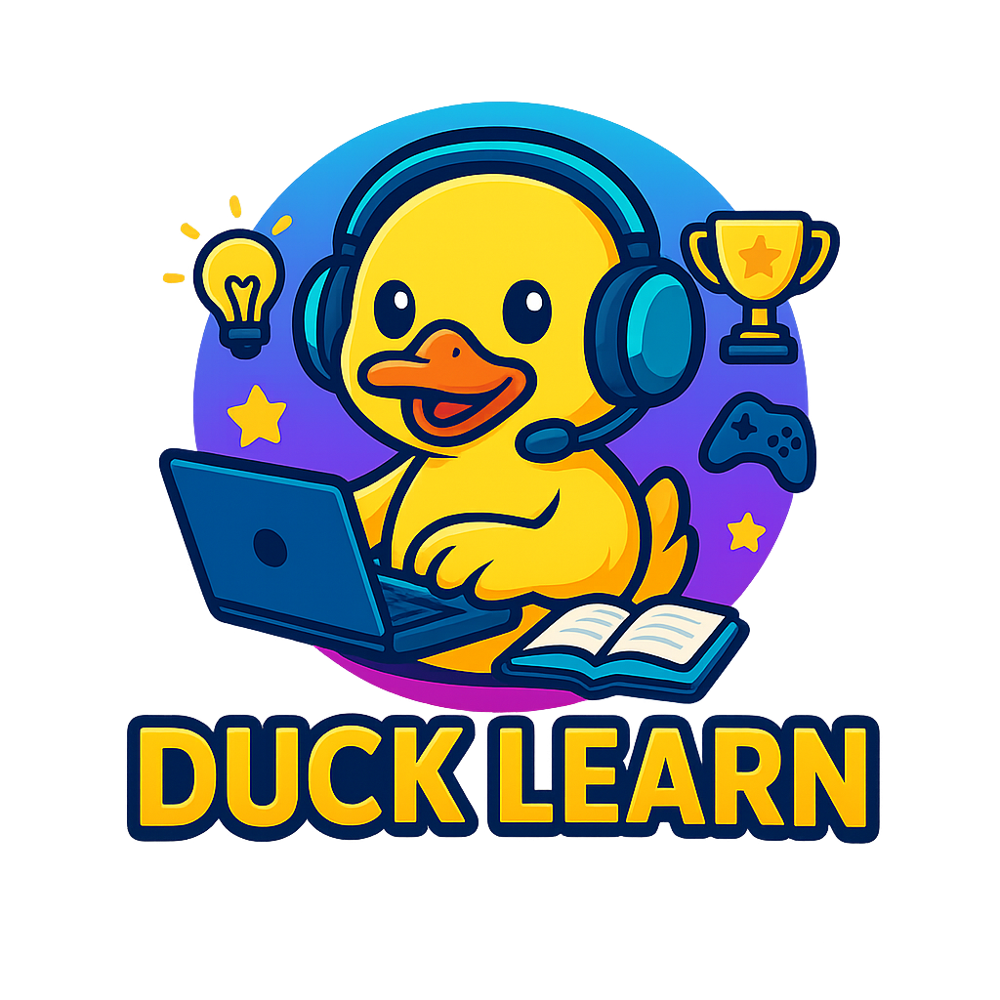

Bem-vindos ao

Domine as matérias do 9º ano ao 3º do ensino médio com quizzes, desafios e recompensas.
Transforme seus estudos em uma verdadeira aventura!
Matemática, Português, História, Ciências e muito mais. Escolha a área que deseja dominar.
Responda quizzes interativos, acumule pontos e avance de nível enquanto aprende.
Desbloqueie medalhas, veja seu progresso e conquiste o topo do ranking!!
Aprendizado dinâmico: Cada quiz é uma mini aventura.
Gamificação completa: Pontos, níveis, conquistas e rankings.
Conteúdos atualizados: Todas as matérias do 9º ano ao 3º do ensino médio.
Desenvolva habilidades reais: Raciocínio, concentração e memória.
⭐⭐⭐⭐⭐
“Nunca pensei que estudar Biologia pudesse ser tão divertido! Os quizzes me ajudaram a fixar tudo rapidinho.”— Lucas M., 2º ano do Ensino Médio
⭐⭐⭐⭐☆
“Adorei o sistema de níveis! Fico competindo com meus amigos toda semana.”— Marina S., 9º ano
⭐⭐⭐⭐⭐
“O Duck Learn me ajudou a revisar para o vestibular sem stress. É como jogar e aprender ao mesmo tempo.”— Pedro H., 3º ano
Janeiro: 1.000
Março: 3.500
Junho: 8.000
Setembro: 12.500
Matemática — 35%
Biologia — 25%
História — 20%
Português — 15%
Física — 5%
Antes do Duck Learn: 62%
Depois de 2 semanas usando: 84%